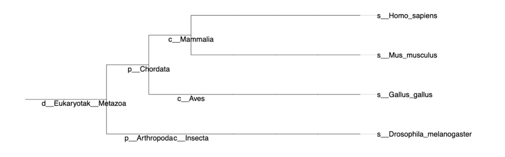
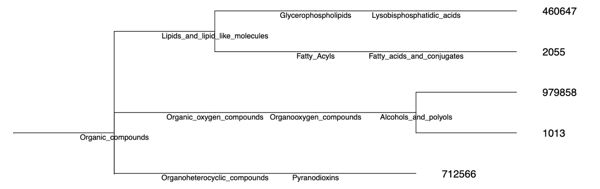

3 Tree Object
3.1 Taxonomic level
Biological: iPhylo trees show the taxonomic structure in 8 main taxonomic ranks: Domain, Kingdom, Phylum, Class, Order, Family, Genus, Species level of NCBI taxonomy database.
If the node entered is outside of these ranks, e.g. subfamily, iPhylo will keep your node and provide the parent main rank above this rank.
Chemical: iPhylo creates chemical taxonomic trees according to the classification methodology ChemOnt.
The resulting chemical classification tree is organized around chemical taxonomy, starting from the highest level and descending to the lowest level: Kingdom, SuperClass, Class, SubClass, Parent Level 1, and Parent Level 2. The last two categories represent two taxonomic levels directly below SubClass.
3.2 Branch length
iPhylo tree don’t contain branch length information or support value, however you can set all branch length to 1.00000 for visual clarity and subsequent analysis in external software.
3.3 Nodes
All nodes in the biological tree are labeled with scientific names.

The leaf nodes (the last node of each branch) of the chemical tree are labeled with ids, and the other internal nodes are labeled with compound category names, like “Glycerolipids”. Don’t worry about figuring out which compounds the ids correspond to, we’ll provide a table of correspondences.

| id | name | inchi | inchikey | inchikey_Planar | SMILES | kingdom | superclass | class | subclass | parent_level_1 | parent_level_2 |
|---|---|---|---|---|---|---|---|---|---|---|---|
| 2055 | 9-SAHHDA | InChI=1S/C35H68O4/c1-3-5-7-9-11-12-13-14-15-16-17-18-19-24-28-32-35(38)39-33(29-25-21-10-8-6-4-2)30-26-22-20-23-27-31-34(36)37/h33H,3-32H2,1-2H3,(H,36,37) | RNTVFRIIJJCYMG-UHFFFAOYSA-N | NA | O=C(O)CCCCCCCC(OC(=O)CCCCCCCCCCCCCCCCC)CCCCCCCC | Organic_compounds | Lipids_and_lipid_like_molecules | Fatty_Acyls | Fatty_acids_and_conjugates | Long_chain_fatty_acids | NA |
| 460647 | BMP 40:2 | InChI=1S/C46H87O10P/c1-3-5-7-9-11-13-15-17-18-19-20-21-22-23-24-26-28-30-32-34-36-38-46(50)56-44(40-48)42-54-57(51,52)53-41-43(39-47)55-45(49)37-35-33-31-29-27-25-16-14-12-10-8-6-4-2/h15,17,19-20,43-44,47-48H,3-14,16,18,21-42H2,1-2H3,(H,51,52)/b17-15-,20-19- | AAABPESZRWCLEX-YVCOGYDTSA-N | NA | O=C(OC(CO)COP(=O)(O)OCC(OC(=O)CCCCCCCCCCCCCCC)CO)CCCCCCCCCCCC=CCC=CCCCCCCC | Organic_compounds | Lipids_and_lipid_like_molecules | Glycerophospholipids | Lysobisphosphatidic_acids | NA | |
| 979858 | Cer 9:0;2O/32:8 | InChI=1S/C41H67NO3/c1-3-5-7-9-10-11-12-13-14-15-16-17-18-19-20-21-22-23-24-25-26-27-28-29-30-31-32-33-35-37-41(45)42-39(38-43)40(44)36-34-8-6-4-2/h5,7,10-11,13-14,16-17,19-20,22-23,25-26,28-29,39-40,43-44H,3-4,6,8-9,12,15,18,21,24,27,30-38H2,1-2H3,(H,42,45)/b7-5-,11-10-,14-13-,17-16-,20-19-,23-22-,26-25-,29-28- | AAAAJZXUELYQDP-KRXQTBQASA-N | NA | O=C(NC(CO)C(O)CCCCCC)CCCCCCC=CCC=CCC=CCC=CCC=CCC=CCC=CCC=CCC | Organic_compounds | Organic_oxygen_compounds | Organooxygen_compounds | Alcohols_and_polyols | Secondary_alcohols | NA |
| 1013 | Cer 8:1;2O/26:5 | InChI=1S/C34H57NO3/c1-3-5-7-8-9-10-11-12-13-14-15-16-17-18-19-20-21-22-23-24-25-26-28-30-34(38)35-32(31-36)33(37)29-27-6-4-2/h5,7,9-10,12-13,15-16,18-19,27,29,32-33,36-37H,3-4,6,8,11,14,17,20-26,28,30-31H2,1-2H3,(H,35,38)/b7-5-,10-9-,13-12-,16-15-,19-18-,29-27+ | QABMGQOLCJWSNA-GVWODYQASA-N | NA | O=C(NC(CO)C(O)C=CCCC)CCCCCCCCCC=CCC=CCC=CCC=CCC=CCC | Organic_compounds | Organic_oxygen_compounds | Organooxygen_compounds | Alcohols_and_polyols | Secondary_alcohols | NA |
| 712566 | mycalamide E | InChI=1S/C25H43NO10/c1-13-10-25(32-8,36-15(3)14(13)2)20(28)22(29)26-23-19-18(33-12-34-23)21(31-7)24(4,5)17(35-19)9-16(11-27)30-6/h14-21,23,27-28H,1,9-12H2,2-8H3,(H,26,29)/t14-,15-,16+,17-,18+,19+,20-,21-,23+,25-/m1/s1 | AAABMNXUOFPYQK-GRMLSQNXSA-N | NA | C[C@H]1C@HC | Organic_compounds | Organoheterocyclic_compounds | Pyranodioxins | NA | ||
| 2141 | 1-Cinnamoylpyrrolidine | InChI=1S/C13H15NO/c15-13(14-10-4-5-11-14)9-8-12-6-2-1-3-7-12/h1-3,6-9H,4-5,10-11H2 | JSIGICUAXLIURX-UHFFFAOYSA-N | NA | O=C(C=CC=1C=CC=CC1)N2CCCC2 | Organic_compounds | Phenylpropanoids_and_polyketides | Cinnamic_acids_and_derivatives | NA |
3.4 Manipulate your tree
3.4.1 Interrupt
Use the Interrupt at check box to interrupt the extension of a tree branch at any specific taxonomy level. This function will significantly avoid the formation of excessively large trees with an overwhelming number of nodes.
Example 4 from Phylo Tree is used as an example:
Before interrupt:
_____ ____ _____ ____ _____ _____ s__Drosophila_melanogaster
|
_____ ____| _____ ____ _____ _____ s__Mus_musculus
| | ____|
| |_____| |_____ ____ _____ _____ s__Homo_sapiens
______| |
| |____ _____ ____ _____ _____ s__Gallus_gallus
|
|_____ ____ _____ ____ _____ ____ _____ _____ s__Escherichia_coliAfter interrupt (at Phylum level):
______________ p__Chordata
______________ ______________|
________________| |______________ p__Arthropoda
|
|______________ ______________ ______________ p__Proteobacteria3.4.2 Sub-tree
You can quickly obtain a full-clade tree for any taxonomic level using the operator |subtree. The resulting sub-tree comprises the common ancestor and all its descendants in the specified clade.
For example:
Primates|subtree
Liliaceae|subtreeThis feature in chemical classification tree needs to input the chemical category names as the prefixes.
For example:
Hydroxyindoles|subtree
Pentalenes|subtree
Organophosphorus compounds|subtree